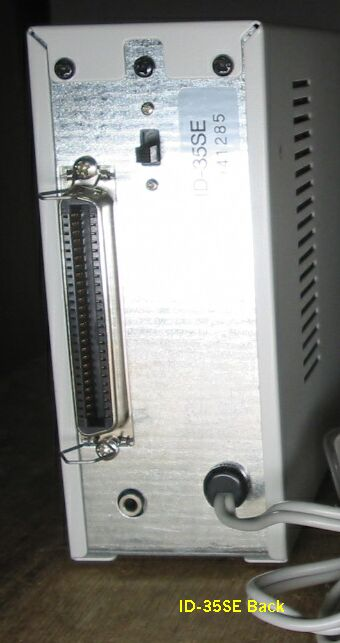
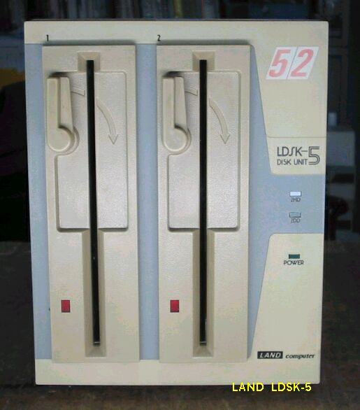
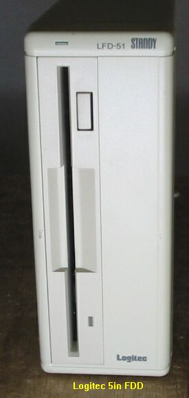
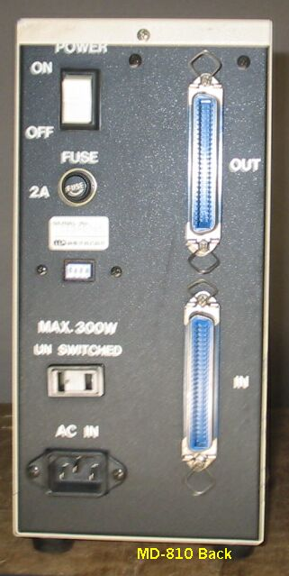
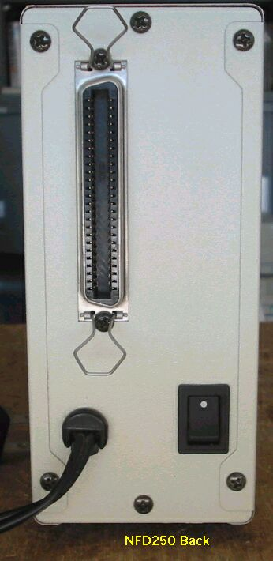
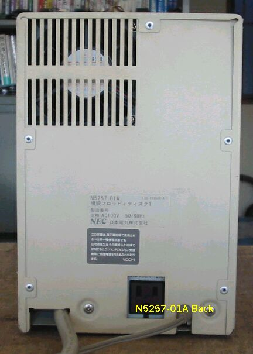

PC98用外付けFDDについて
PC98では、FDDだけで運用する時代がMACなどと比べ、長く続いたため、また５インチと3.5インチ
の切り替わりが遅かったため、様々な外付けFDDが存在します。
FDDの付いていないパソコンさえ、普通になってきた今でも、過去のデータやソフトを利用するため
、このような外付けFDDには、わずかながら需要があり、生産さえされています。
いつの間にか、手元にたまったFDDが無くなってしまう前に、詳しい説明は抜きで、
とりあえず、記録に残したいと思います。
自作2DD/2HD FDD
まず最初に、自作のFDDを取り上げます。まだメーカ製の外付けFDDが高価だった頃、ジャンクの内蔵FDDを利用して、
作製された外付けFDDがあります。2HDと2DDが１台ずつ、それぞれ裏側のコネクタに接続されています。2HDはFD1137D、
2DDはEPSON SMD-280です。まことに、アマチュア精神にあふれるもので、記録に残しておきたいと思います。
作ったのは、もちろん私ではありません。
（2003/11/01/ 記）
ACCEL FDC311A
ACCEL FDC-357
αDATA AD-F35SL
αDATA AD-F51S
ACE AF-35W
ATD 352 メーカ不明
ATi FD55
ATi FD55(その２)
これは横置きのバージョンです。
Computer Research 3.5インチ２ドライブFDD 型名不明
ELECOM FDD-5W
ELECOM FDD-35W14
ELECOM FDD-3.5S
このFDDは電源を内蔵していないので、ACアダプタ5V0.85Aが必要です。コネクタの
チップ側がマイナスのようなので、専用の物以外では注意すること。
黒いベゼルのFDDは、富士通製のTOWNS初代から取り外したもので、修理のため入れ替えたもの。
fujitsu-B03L-4505-0213A、元メーカはYE-DATA（YD-686C）。
ELECOM FDD-3.5WA
このFDDは電源を内蔵していないので、ACアダプタ5V0.85Aが必要です。コネクタの
チップ側がマイナスのようなので、専用の物以外では注意すること。
ドライブが故障し、全く使えないドライブに交換されていたのでいたので、YE-DATAの
686Cに交換、正常に動作するようになった。
GLORIA SYSTEMS GD-50Hs
接続用ケーブルは50芯で、まるでSCSIフラットケーブルのようです。
IDOL ID-35SE

LAND LDS-5UV

接続用ケーブルは36芯です。
LAND LDSK-5

Logitec LFD-51

Logitec LFD-582R
Logitec LFD332
Logitec SFD-31J
Logitec SFD332M
MIDORI MD-New Lite 2

MIDORI MD-810 8インチFDD

Needs NFD-135 NFD-235V
Needs NFD-250

NEC純正3.5インチ２ドライブ フロッピーディスクユニット PC-FD312

NEC純正3.5インチ２ドライブ マイクロフロッピーディスクユニット PC-9831-VW2

NEC純正PC-9881K 8インチFDD
8インチFDDです。外付けというより、パソコンでは内蔵が無理で、当然外付けです。
NEC N5200用 8インチFDD N5257-01A

ワークステイションN5200用の外付け8インチFDDです。
PCLINE 35D
50芯用と36芯用のコネクタが付いています。
TSUKUMO TS5SR
接続用ケーブルは36芯です。
TEAC FD-30W
接続用ケーブルコネクタは変わっていて、98用SCSIによくあるハーフピッチです。
TEAC DD1000 DISK&DISK

3.5インチFDD1台とSCSI-HDD１台が一つのケースに入っています。HDDはMaxtorの7120SRが入っていましたが、
不調なので、7340に取り替えました。接続用ケーブルコネクタはHDDもFDDも同じで、間違えないかと心配です。
98用SCSIによくある50pinハーフピッチです。
接続用ケーブル
極太の50芯SCSIケーブルといったところですが、実際SCSIケーブルと違いはありません。
（2003/06/24 記）
接続用ケーブル2
50pinと36pinの変換ケーブルで、CRC製の外付けFDDで使います。LANDコンピュータ製のFDDには合いません。
（2004/09/18 記）
接続用ケーブル3
50pinフルピッチとハーフピッチの変換ケーブルで、TEAC製の外付けFDDで使います。もちろんSCSIケーブルとしても
使用できます。PC-H98では外付けFDD用のコネクタが、ハーフピッチなのでこのケーブルが使えます。
（2004/09/18 記）
ホームページに戻る